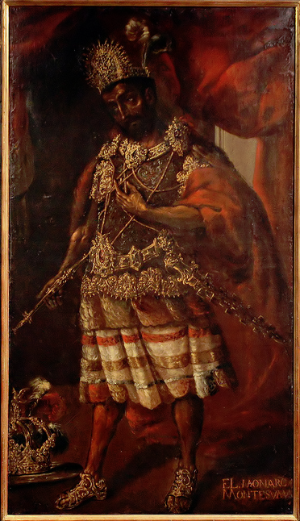
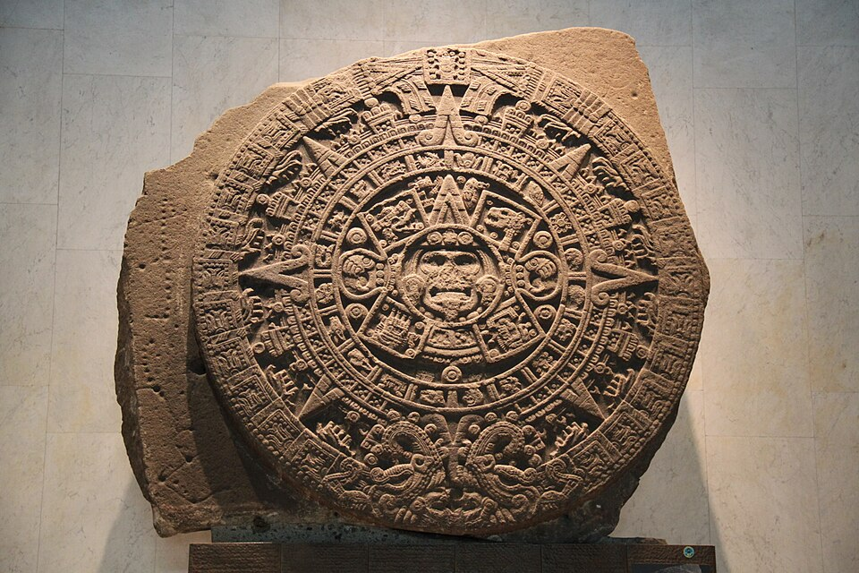
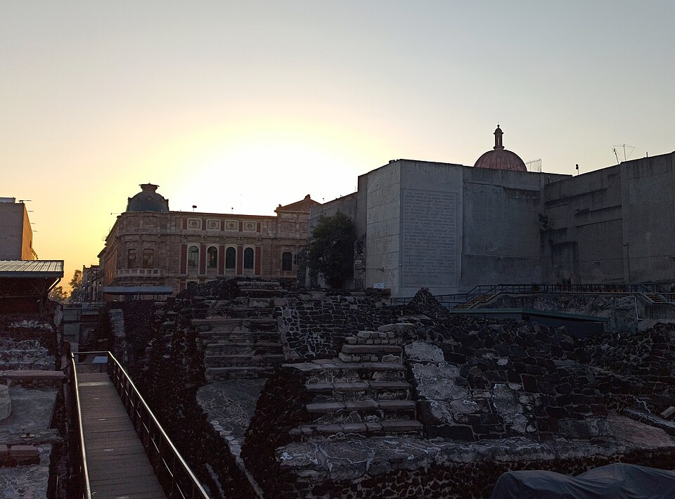

⏱️ 10초 카드 · 아스텍 최전성기 (1466?~1520)
테노치티틀란호수 위 20만 도시엇갈린 죽음
여는 질문 — 패배한 쪽의 역사는 누가, 어떻게 쓸까?
이름
한국어목테수마 2세
원어Motēuczōma Xōcoyōtzin
실제 발음목테수마
로마자Moctezuma II
영어권Moctezuma II
별칭몬테수마
왜 이 사람인가
이 도감에서 목테수마는 '승자의 펜'에 대해 가르쳐 줘요. 그는 유럽 어느 도시보다 큰 계획도시를 다스린 찬란한 문명의 황제였지만, 우리는 그를 흔히 '우유부단한 패배자'로만 기억하죠 — 그렇게 기록한 건 대부분 그를 무너뜨린 쪽이었어요. 그의 도시와 문명이 얼마나 정교했는지를 함께 기억해야 공정해요.
생애
아스텍 제국이 가장 넓고 화려하던 시기의 황제예요. 그의 테노치티틀란은 인구 약 20만의 호수 위 계획도시로, 당시 유럽의 어떤 도시보다 컸어요. 정교한 달력과 수경 농업, 거대한 시장 — '미개'와는 정반대의 문명을 다스렸죠.
1519년 낯선 침입자들 앞에서 그는 무력 대신 선물과 외교로 시간을 벌려 했어요. 신중한 정보 수집이었는지 치명적 주저였는지, 역사가들의 평가는 갈려요. 분명한 건 그가 곧 스페인군의 인질이 되어 제국의 권위가 흔들리는 것을 지켜봐야 했다는 거예요.
1520년 혼란 속에 목숨을 잃었어요 — 성난 군중의 돌에 맞았다는 스페인 측 기록과, 스페인군이 살해했다는 원주민 측 기록이 엇갈리죠. 죽음의 진실조차 기록 싸움이 된 것 — 패배한 쪽의 역사가 어떻게 쓰이는지 보여 주는 인물이에요.
자료로 보기 — 유묵·사진



남긴 말
“이 땅도, 이 집도 모두 당신의 것입니다.”
코르테스를 맞으며 했다고 '스페인 측'이 기록한 환영의 말 — 그러나 정복을 정당화하려 승자가 지어냈을 가능성이 커요. · 출처: 스페인 측 기록(진위 논란)
“하늘에 불의 깃발 같은 징조가 나타났다고 사람들은 말했다.”
정복 뒤 나우아족이 들려준 이야기를 모은 『피렌체 고문서』의 전조 기록 — 패배를 설명하려 한 원주민 쪽 기억이에요. · 출처: 『피렌체 고문서』(사아군) 요지
연표
- 1466?출생
- 1502아스텍 황제 즉위 — 제국 최전성기
- 1519.11코르테스 일행 입성 — 이후 인질로
- 1520.6혼란 속 사망 (기록 엇갈림)
생애의 길 — 호수 위의 도시, 그리고 그 끝 🗺️
제국의 중심에서, 해안에서 온 소식으로, 그리고 비극으로. 번호를 차례로 눌러 보세요.
현재 지도 위 표시예요. 소식은 동쪽 해안에서 왔고, 비극은 호수 위 도시에서 끝났어요 — 화살표가 다시 도시로 돌아오는 게 이 이야기의 슬픔이에요.
빛과 그림자찬란한 문명의 통치자이자, 침입 앞에서 판단이 엇갈린 지도자. 그를 '우유부단한 패배자'로만 기록한 것은 대부분 승자의 펜이었다는 점을 기억하세요 — 그의 도시와 문명이 얼마나 정교했는지가 함께 기억되어야 공정해요.
더 깊이 (고등·일반)
호수 위의 20만 도시 — 테노치티틀란
목테수마의 수도 테노치티틀란은 호수 한가운데 세워진 인구 약 20만의 계획도시였어요. 당시 유럽의 어떤 도시보다 컸죠. 둑길과 운하, 물 위에 떠 있는 밭(치남파)으로 농사를 짓고, 정교한 달력과 거대한 시장을 갖춘 — '미개'와는 정반대의 문명이었어요. 스페인 병사들조차 그 규모에 '꿈을 꾸는 것 같다'고 적었죠.
참고: 테노치티틀란·아스텍 문명 일반
선물인가, 주저인가
1519년 낯선 침입자들 앞에서 목테수마는 무력 대신 선물과 외교로 시간을 벌려 했어요. 이것이 적을 살피려는 신중한 정보 수집이었는지, 아니면 치명적인 주저였는지 — 역사가들의 평가는 지금도 갈려요. 분명한 건, 그 선택을 '겁쟁이'라고 단정한 기록이 대부분 승자의 것이라는 점이에요.
참고: 목테수마의 대응 논쟁 일반
인질이 된 황제
얼마 지나지 않아 목테수마는 자기 궁에서 스페인군의 인질이 됐어요. 제국의 살아 있는 권위가, 침입자의 손에 붙잡힌 거죠. 황제를 통해 제국을 조종하려던 코르테스의 수법이었지만, 그것은 곧 아스텍 사람들의 분노를 불렀어요.
참고: 목테수마 인질 일반
엇갈리는 죽음 (1520)
1520년 혼란 속에서 목테수마는 목숨을 잃었어요. 그런데 그 죽음조차 기록이 엇갈려요 — '성난 자기 백성의 돌에 맞았다'는 스페인 측 기록과, '스페인군이 살해했다'는 원주민 측 기록이 정면으로 부딪치죠. 죽음의 진실마저 기록 싸움이 된 거예요.
참고: 목테수마의 죽음 기록 논쟁 일반
승자의 펜 vs 아스텍의 기억
오랫동안 아스텍은 '미개한 야만'으로 그려졌어요 — 정복을 정당화하기에 편한 이야기였으니까요. 하지만 발굴된 템플로 마요르와 남은 기록들은 정반대를 말해요. 한 인물을, 한 문명을 평가할 때 '누가 그 기록을 썼는가'를 먼저 묻는 것 — 목테수마가 우리에게 남긴 숙제예요.
참고: 아스텍 서술의 편향 일반
이 인물이 나오는 이야기
더 공부하기 — 여기서 출발하세요
📚 책으로
- 아스텍 — 그 문명의 역사 ↗'미개'라는 편견을 걷어내고 보는 아스텍 문명.
- 아스텍 정복의 일곱 가지 신화 ↗ · 매슈 레스톨목테수마의 '환영 연설' 같은 신화를 사료로 검증.
📜 1차 사료
- 『피렌체 고문서』 (사아군) ↗정복을 겪은 나우아족의 증언을 모은, 원주민 쪽 기록.
🎬 영상으로
- 〈테노치티틀란 — 아스텍의 수도〉 3D 복원 ↗🟢 호수 위 20만 도시가 어떤 모습이었는지 3D로 되살린 영상 — '미개'라는 편견이 깨져요(영어/영상).
📍 가 볼 곳
- 템플로 마요르 박물관 (멕시코시티) ↗테노치티틀란 대신전의 발굴 유적 — 문명의 증거.
- 국립인류학박물관 (멕시코시티)아스텍 달력석 등 — 그 문명의 정교함이 모인 곳.